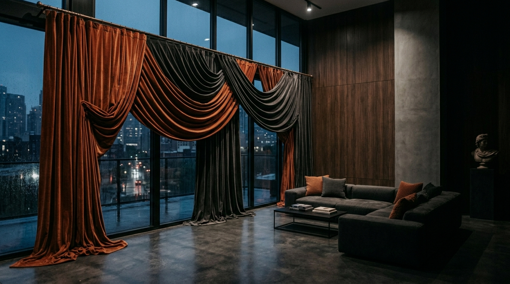

About our curtains range
Curtains influence how a window feels within a room, so start by considering daylight, privacy and the way you use the space. At WOW Lifestyle's Ubi showroom, you can explore fabrics and colours and see them in person. A bedroom may call for a different look from a living room, while a window facing strong daylight may need a different fabric choice from one in a shaded area. Think about these needs before narrowing the style.
Measure the window carefully, including its width and height, and note the position of the rail or track if you already have one. Compare fabric texture and colour with your walls, flooring and furniture; a small sample can look different beside the rest of the room. Consider how the curtains will sit when open and closed, and whether the chosen shade works with the light at different times of day. Bring photos and measurements to help you compare.
Choosing curtains is easier when you can see the materials and colours outside a screen. Ask our team what is available to view and which details you should confirm for your window. Visit our Singapore showroom to compare options in person and discuss your room. You can make an appointment before travelling to Ubi; appointments are subject to confirmation by our team.
- Measure the window width and the height from rail to floor.
- Compare how much light each fabric lets through.
- Match the colour to your walls and furniture.
Images are for illustration only. Actual products, colours and availability may vary. Please visit our showroom to view the range.

Common questions
What curtain options are there?
Our showroom shows a range of fabrics and colours. Availability varies, so please ask our team.
Can I buy online?
We sell through our showroom only. You are welcome to make an appointment to visit us.
What warranty do products come with?
Warranty depends on the product and brand. Please contact us for details.
Ready to see it for yourself?
Make an appointment, or send us a message on WhatsApp. Appointments are subject to confirmation by our team.